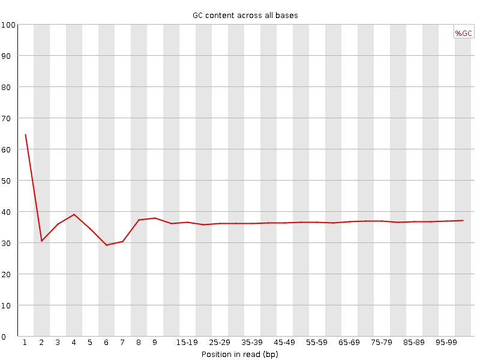

![[OK]](Icons/tick.png) Basic Statistics
Basic Statistics
| Measure | Value |
|---|---|
| Filename | c4_1.fq |
| File type | Conventional base calls |
| Encoding | Sanger / Illumina 1.9 |
| Total Sequences | 35186360 |
| Filtered Sequences | 0 |
| Sequence length | 100 |
| %GC | 36 |
Per base sequence quality
Per sequence quality scores
![[FAIL]](Icons/error.png) Per base sequence content
Per base sequence content
Per base GC content

![[WARN]](Icons/warning.png) Per sequence GC content
Per sequence GC content
Per base N content

Sequence Length Distribution

Sequence Duplication Levels
Overrepresented sequences
| Sequence | Count | Percentage | Possible Source |
|---|---|---|---|
| CTAATTTTCATCTTAATTCAACATCGAGGTCGCAAACATCTTTATCTATA | 101356 | 0.28805480305436537 | No Hit |
| CTTTCGTACAATTAATTAATATTTTATTATAGATAGAAACCAATCTGACT | 86648 | 0.24625451453347263 | No Hit |
| CAAAAACATGTCCTGTTGATTATAATTTTAGGTCGATCTGCTCAATGAAT | 36601 | 0.10402042154971415 | No Hit |
| CTTTATTTAAGATTTAATTTTGATATAAAGATAATTTTTTGAATTATAAA | 36365 | 0.10334970710241127 | No Hit |
| CTTTGTACAGTCAACATACTGCAGCTATTTAAAATAATTCATTGAGCAGA | 35792 | 0.10172123516044285 | No Hit |
Kmer Content
| Sequence | Count | Obs/Exp Overall | Obs/Exp Max | Max Obs/Exp Position |
|---|---|---|---|---|
| CGCCG | 1619390 | 2.2918742 | 5.871411 | 1 |
| CGAGG | 2712005 | 2.275284 | 6.251702 | 1 |
| AAAAA | 23221050 | 2.226515 | 5.132415 | 2 |
| CGGCG | 1479410 | 2.1170514 | 5.729889 | 1 |
| CGACG | 2497245 | 2.072062 | 8.327183 | 1 |
| CGCGG | 1403180 | 2.0079653 | 6.6355124 | 1 |
| TCGAG | 3786790 | 1.821466 | 5.1730933 | 7 |
| CGCGA | 2124380 | 1.7626814 | 6.4128194 | 1 |
| CTCGA | 3672770 | 1.7471898 | 9.461421 | 1 |
| CTGGA | 3430875 | 1.6502692 | 7.569065 | 1 |
| CCGGC | 1160250 | 1.6420673 | 5.885003 | 1 |
| CGCCA | 1978325 | 1.6234381 | 5.552648 | 1 |
| CGCGC | 1146870 | 1.6231308 | 5.2869883 | 1 |
| CGATC | 3406985 | 1.620752 | 5.2700944 | 4 |
| CTTCC | 3388660 | 1.5764378 | 5.066188 | 1 |
| ATCGA | 5633195 | 1.5710986 | 5.2284446 | 6 |
| CGAGA | 3226710 | 1.5696537 | 5.661248 | 1 |
| GTCGA | 3205395 | 1.5418121 | 5.0629034 | 1 |
| CTCCA | 3225750 | 1.5176568 | 6.6518717 | 1 |
| CTCGC | 1815100 | 1.4728029 | 7.227322 | 1 |
| CTCGG | 1794045 | 1.4719088 | 8.754668 | 1 |
| CTTTC | 5433490 | 1.4653318 | 7.860747 | 1 |
| CTTTT | 9304645 | 1.4546722 | 6.596749 | 1 |
| CTGGC | 1751855 | 1.4372945 | 5.54046 | 1 |
| CTTCG | 3055170 | 1.4371024 | 6.443822 | 1 |
| CGAAG | 2935250 | 1.427871 | 5.4178586 | 1 |
| TTTCA | 8863900 | 1.4014713 | 5.0858955 | 6 |
| CTCGT | 2944235 | 1.3849202 | 7.616041 | 1 |
| CGCGT | 1686845 | 1.3839575 | 5.0779676 | 1 |
| TCATC | 5009025 | 1.3661686 | 5.411737 | 8 |
| CTTCA | 4758670 | 1.2978865 | 5.3032484 | 1 |
| CGAAA | 4344125 | 1.2253072 | 5.4489717 | 1 |
| CTTGG | 2548690 | 1.2121959 | 6.313607 | 1 |
| CTTTG | 4255050 | 1.1602865 | 6.0085278 | 1 |
| CTTGA | 4052845 | 1.1176727 | 5.5163636 | 1 |
| CGTAC | 1713665 | 0.8152152 | 5.219401 | 5 |